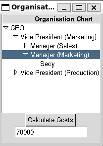
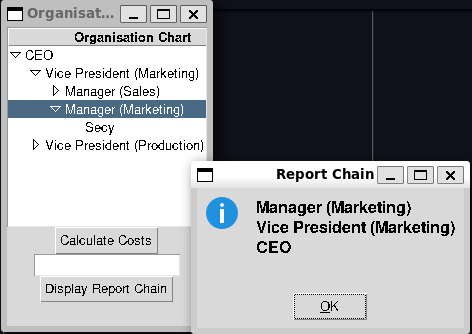

---
title: "The Composite Pattern"
---
classDiagram
class Client
class Component {
+operation()
}
class Leaf {
+operation()
}
class Composite {
+operation()
}
Leaf --|> Component
Composite --|> Component
Client --> Component : Uses
Component "1..*" <--* Composite : Children
Chapter 14: The Composite Pattern
Notes
- A common programming paradigm occurs when developing objects that themselves may be the object, or a smaller part of a composite
- For example, a tree can be viewed as both the whole object and also comprised of sub-trees which are themselves whole objects
- The Composite Pattern is designed to provide an implementation flexible to either use-case
- To summarise, a composite is a collection of objects
- Each object in the collection may be a further collection or a primitive
- With composites we have to navigate providing a simple interface for all objects
Maintain the ability to distinguish between internal nodes and leafs
One option is to have distinct interfaces for leaves and internal nodes e..g for an employee hierarchy
class Leaf: def name(): pass def salary(): pass class InternalNode: def subordinates(): pass def add(self, employee): pass def get_child(self, name: str): passHowever, it is preferable to have one interface
- This can pose challenges for how we handle methods that only make sense for one type of object
- e.g. We might not be able to add to leaf nodes, or get a child from one
A solution is to use exceptions to handle the invalid operations
Implementing a Composite
- Consider implementing a small company hierarchy
- Run by a CEO
- Broken down into a marketing department and a production department
- Each run by a Vice President
- Departments have teams led by a manager
- The overall team hierarchy is then given by
--- title: "Company Org Chart" --- flowchart TD CEO mktg["VP Marketing"] prod["VP Production"] sales_mgr["Sales Manager"] mkt_mgr["Marketing Manager"] sales_1["Sales"] sales_2["Sales"] secy["Secy"] CEO --> mktg mktg --> sales_mgr mktg --> mkt_mgr sales_mgr --> sales_1 sales_mgr --> sales_2 mkt_mgr --> secy prod_mgr["Production Manager"] ship_mgr["Shipping Manager"] manu_1["Manufacturing"] manu_2["Manufacturing"] manu_3["Manufacturing"] clerk_1["Clerk"] clerk_2["Clerk"] CEO --> prod prod --> prod_mgr prod --> ship_mgr prod_mgr --> manu_1 prod_mgr --> manu_2 prod_mgr --> manu_3 ship_mgr --> clerk_1 ship_mgr --> clerk_2
Computing Salaries
- Each employee draw’s a salary
- We might want to ask what the cost of an individual employee is
- This is simply their salary
- We alternatively might like to ask what the cost of a department or team is
- This can be considered as the sum of the department head’s salary and that of their recursive reports
- Ideally we could implement this through one interface, as a composite
For now, rather than defining an abstract interface first we’ll use a base
JobPositionclass and aManagingJobPositionThe
JobPositionis a simple class that consists of anameandsalary- It’s unable to have subordinates, enforced via exceptions
class JobPosition: """ Represents an job position with a name and salary The base class is not able to manage a position Attributes ---------- name: str The name of the job position salary: decimal.Decimal Salary attached to this position """ def __init__(self, name: str, salary: decimal.Decimal) -> None: """ Create a new `JobPosition` with an associated name and salary Parameters ---------- name : str The job title salary : decimal.Decimal Role's salary """ self.name = name self.salary = salary def __str__(self) -> str: return f"{self.name} {self.salary}" @property def cost(self) -> decimal.Decimal: """ The cost of this position and all subordinate positions Returns ------- decimal.Decimal cost of this job position """ return self.salary @property def subordinates(self) -> list[JobPosition]: """ The list of direct subordinates to this role Returns ------- list[JobPosition] Direct reports to this position, empty if none exist """ return [] def add_direct_report(self, employee: JobPosition) -> None: """ Add a direct report to this employee Parameters ---------- employee : JobPosition The position to add as a direct report Raises ------ EmployeeException Raised if this employee cannot accept direct reports """ raise EmployeeException("Employee is not authorised to supervise") def print_hierarchy(self, indent: int = 0) -> None: """ Pretty print the job with a given indent Designed to be able to recursively pretty print an org chart Parameters ---------- indent : int, optional amount of whitespace to indent this job description, by default 0 """ print(" " * indent + self.__str__()) def get_child(self, name: str) -> JobPosition | None: """ Retrieve the child job position with the given name Recursively searches through all reports and returns the first match Parameters ---------- name : str position title to retrieve Returns ------- JobPosition | None First JobPosition found matching the name, or `None` if no matches found """ return None- Most of the methods here are designed to operate on children, so we need to set-up our interface to handle those
costis a property here, that is designed to represent the cost of a position and all it’s subordinates- This makes it distinct from the position’s salary
__str__andprint_hierarchyare designed to help pretty print our org tree
add_direct_report,get_child, andsubordinatesare all designed to work on child nodes so we implement sufficient placeholders
Now we need to implement our
ManagingJobPositionthat can handle subordinatesclass ManagingPosition(JobPosition): """ Represents an job position capable of managing subordinates Attributes ---------- name: str The name of the job position salary: decimal.Decimal Salary attached to this position """ def __init__(self, name, salary: decimal.Decimal) -> None: super().__init__(name, salary) self._subordinates: list[JobPosition] = [] @property def cost(self) -> decimal.Decimal: total_cost = sum([subordinate.cost for subordinate in self.subordinates]) if total_cost: return total_cost else: return decimal.Decimal(0) @property def subordinates(self) -> list[JobPosition]: return self._subordinates def add_direct_report(self, employee: JobPosition) -> None: self._subordinates.append(employee) def print_hierarchy(self, indent: int = 0) -> None: super().print_hierarchy(indent) # print this level for child in self.subordinates: child.print_hierarchy(indent=indent + 2) def get_child(self, name: str) -> JobPosition | None: for child in self.subordinates: if child.name == name: return child elif found := child.get_child(name): return found return None
- The code for these classes is provided in the employees.py module
Providing an Interface
For the above program we can provide a basic CLI interface which simply prints out the organisation chart as an indented tree
- This is done via the
print_hierarchymethod
- This is done via the
Here we’ll define a
UIBuilderclass and try and write a generic interface that can be replaced by a GUI without having to change the calling codeclass UIBuilder: def build(self): ceo = employees.ManagingPosition("CEO", decimal.Decimal(200_000)) # Create marketing hierarchy marketing_vp = employees.ManagingPosition( "Vice President (Marketing)", salary=decimal.Decimal(100_000) ) sales_mgr = employees.ManagingPosition( "Manager (Sales)", salary=decimal.Decimal(50_000) ) marketing_mgr = employees.ManagingPosition( name="Manager (Marketing)", salary=decimal.Decimal(50_000) ) ceo.add_direct_report(marketing_vp) marketing_vp.add_direct_report(sales_mgr) marketing_vp.add_direct_report(marketing_mgr) SALARY_MAX_SHIFT = 10_000 for i in range(0, 3): sales_mgr.add_direct_report( employees.JobPosition( f"Sales ({i})", salary=decimal.Decimal( 30_000 + random.randint(0, SALARY_MAX_SHIFT) ), ) ) marketing_mgr.add_direct_report( employees.JobPosition("Secy", salary=decimal.Decimal(20_000)) ) # create production hierarchy production_vp = employees.ManagingPosition( name="Vice President (Production)", salary=decimal.Decimal(100_0000) ) ceo.add_direct_report(production_vp) production_mgr = employees.ManagingPosition( "Manager (Production)", salary=decimal.Decimal(40_000) ) shipping_mgr = employees.ManagingPosition( "Manager (Shipping)", salary=decimal.Decimal(35_000) ) production_vp.add_direct_report(production_mgr) production_vp.add_direct_report(shipping_mgr) for i in range(0, 4): production_mgr.add_direct_report( employees.JobPosition( f"Manufacturing ({i})", salary=decimal.Decimal( 25_000 + random.randint(0, SALARY_MAX_SHIFT) ), ) ) for i in range(0, 4): shipping_mgr.add_direct_report( employees.JobPosition( f"Clerk ({i})", salary=decimal.Decimal( 20_000 + random.randint(0, SALARY_MAX_SHIFT) ), ) ) self.org_chart = ceo def salary_span(self, name) -> None: if name == self.org_chart.name: cost = self.org_chart.cost elif department := self.org_chart.get_child(name): cost = department.cost else: print("Job Position not found!") return print(f"Salary span for {name}: {cost}") def build_tree(self) -> None: self.org_chart.print_hierarchy() while (name := input("Enter position to determine cost (q for quit): ")) != "q": self.salary_span(name) def main(): ui = UIBuilder() ui.build() ui.build_tree()When we run the program we should see output like the below
CEO 200000 Vice President (Marketing) 100000 Manager (Sales) 50000 Sales (0) 36667 Sales (1) 39993 Sales (2) 38315 Manager (Marketing) 50000 Secy 20000 Vice President (Production) 1000000 Manager (Production) 40000 Manufacturing (0) 29975 Manufacturing (1) 34897 Manufacturing (2) 32323 Manufacturing (3) 32117 Manager (Shipping) 35000 Clerk (0) 29859 Clerk (1) 26294 Clerk (2) 22393 Clerk (3) 28674 Enter position to determine cost (q for quit): Manager (Shipping) Salary span for Manager (Shipping): 107220 Enter position to determine cost (q for quit):The full code can be found in org_chart_console.py
Creating a GUI
- Next we can implement a graphical interface allowing us to view this org chart as a tree
- We want to be able to select a job position, and see the cost associated with that position and it’s subordinates
- We can do this with a basic treeview
- We’ll create a new version of the
UIBuilderclassWe do some refactoring, moving out the code that sets up the organisation tree into a separate method
build_org_chartdef build_org_chart(self): ceo = employees.ManagingPosition("CEO", decimal.Decimal(200_000)) # Create marketing hierarchy marketing_vp = employees.ManagingPosition( "Vice President (Marketing)", salary=decimal.Decimal(100_000) ) sales_mgr = employees.ManagingPosition( "Manager (Sales)", salary=decimal.Decimal(50_000) ) marketing_mgr = employees.ManagingPosition( name="Manager (Marketing)", salary=decimal.Decimal(50_000) ) ceo.add_direct_report(marketing_vp) marketing_vp.add_direct_report(sales_mgr) marketing_vp.add_direct_report(marketing_mgr) SALARY_MAX_SHIFT = 10_000 for i in range(0, 3): sales_mgr.add_direct_report( employees.JobPosition( f"Sales ({i})", salary=decimal.Decimal( 30_000 + random.randint(0, SALARY_MAX_SHIFT) ), ) ) marketing_mgr.add_direct_report( employees.JobPosition("Secy", salary=decimal.Decimal(20_000)) ) # create production hierarchy production_vp = employees.ManagingPosition( name="Vice President (Production)", salary=decimal.Decimal(100_0000) ) ceo.add_direct_report(production_vp) production_mgr = employees.ManagingPosition( "Manager (Production)", salary=decimal.Decimal(40_000) ) shipping_mgr = employees.ManagingPosition( "Manager (Shipping)", salary=decimal.Decimal(35_000) ) production_vp.add_direct_report(production_mgr) production_vp.add_direct_report(shipping_mgr) for i in range(0, 4): production_mgr.add_direct_report( employees.JobPosition( f"Manufacturing ({i})", salary=decimal.Decimal( 25_000 + random.randint(0, SALARY_MAX_SHIFT) ), ) ) for i in range(0, 4): shipping_mgr.add_direct_report( employees.JobPosition( f"Clerk ({i})", salary=decimal.Decimal( 20_000 + random.randint(0, SALARY_MAX_SHIFT) ), ) ) self.org_chart = ceoWe can then rewrite our
buildto set-up the UI- This is pretty straight forward
- We set up some our tree, add a button to click that calculates the cost of the selected subtree and provide an entry to report it in
- We have factored out the code responsible for mapping an input name to the correct part of the org chart tree and retrieving the cost to an internal method
self._calculate_cost
def build(self): self.build_org_chart() self.root = tk.Tk() self.root.geometry("200x300") self.root.title("Organisation Chart") self.frame = tk.ttk.Frame(self.root) self.frame.pack() self.tree = tk.ttk.Treeview(self.frame) entry = tk.ttk.Entry(self.frame) def calculate_salary(): tree_focus = self.tree.focus() tree_item = self.tree.item(tree_focus) name = tree_item["text"] cost = self._calculate_cost(name) if cost is not None: entry.delete(0, tk.END) entry.insert(0, str(cost)) else: tk.messagebox.showwarning( title="Search Failed", message="Job Position Not Found!" ) salary_button = tk.ttk.Button( self.frame, text="Calculate Costs", command=calculate_salary ) self.tree.column("#0", width=250, minwidth=250, stretch=tk.NO) self.tree.pack() salary_button.pack() entry.pack()- This is pretty straight forward
The last step is to populate our tree which we do by modifying the
build_treemethod- We need to traverse the tree to add it to the treeview
- We don’t want to add this method explicitly to the
JobPositioninterface since that couples the data model to the graphical presentation- Instead we define a closure in
build_treeto perform the traversal
- Instead we define a closure in
def build_tree(self) -> None: self.tree.heading("#0", text="Organisation Chart") def traverse_org(treeview_node: str, position: employees.JobPosition): subordinates = position.subordinates if not subordinates: return for sub_position in subordinates: new_node = self.tree.insert( treeview_node, tk.END, text=sub_position.name ) traverse_org(new_node, sub_position) root_node = self.tree.insert("", index=tk.END, text=self.org_chart.name) traverse_org(root_node, self.org_chart) tk.mainloop()Then to conform with the
build_treeinterface for console, we start the tkinter main loop to run the program
- The full program can be found in org_chart_gui.py
- The resulting program should look similar to the below

The Simple cost calculator, the org chart can be viewed as a tree and the cost of any selected subtree calculated
Using Doubly-Linked Lists
- The current program has the issue that we can traverse down the tree, but we can’t traverse up the tree
- We can add this by making each
JobPositionremember it’s parent - For example, we could use this to add the ability to see a position’s report chain
The relevant changes to the
JobPositionclass aredef __init__( self, name: str, salary: decimal.Decimal, parent: JobPosition | None = None ) -> None: """ Create a new `JobPosition` with an associated name and salary Parameters ---------- name : str The job title salary : decimal.Decimal Role's salary parent : JobPosition | None, optional Role's direct supervisor if it exists, by default None """ self.name = name self.salary = salary self.parent = parent @property def supervisor(self) -> JobPosition | None: """ Job Position's direct supervisor Returns ------- JobPosition | None Immediate supervisor if the position exists, else `None` """ return self.parentWe can then provide a button in our UI for the user to query the report chain
def supervision_chain(): tree_focus = self.tree.focus() tree_item = self.tree.item(tree_focus) name = tree_item["text"] if name == self.org_chart.name: tk.messagebox.showinfo( title="Report Chain", message="No direct supervisor" ) return chain = "" position = self.org_chart.get_child(name) while position: chain += position.name + "\n" position = position.supervisor if chain: tk.messagebox.showinfo(title="Report Chain", message=chain) else: tk.messagebox.showwarning( title="Position Missing", message="Position not fouund!" ) supervision_button = tk.ttk.Button( self.frame, text="Display Report Chain", command=supervision_chain )
- The full code can be found in supervision_chain.py and the correspondingly updated employees.py
- The resulting program should look like,

The updated program, since Job Positions now reference their direct parent, we can query the chain of command
- We can add this by making each
Note
Tree Structures and the Organisation Hierarchy
One of the observations one might want to make in the previous examples are that a lot of the client facing code has to differentiate between the root node of the tree and the rest of the children. For example when searching for a match we have to check the root node explicitly, then the sub-tree. Additionally when constructing the treeview we also have to explicitly handle the root node, then recurse into our tree. This is a fairly common paradigm, one potential option around it would be to use a structure that has a special root node, that can forward onto the actual root in such a way that the entire tree can be treated the same way
Intent of the Composite Pattern
- The Composite pattern serves to allow us to construct a tree of related classes via a common interface
- In simple cases where we do not need to distinguish between leaves and internal nodes we can sometimes use a single interface or class to represent both
- For example in our implementation we distinguished between
ManagingJobPositionandJobPosition - We might instead just have one type of job position, and let anyone manage
- A managing job position is then denoted by having a non-empty list of subordinates
- For example in our implementation we distinguished between
- In this case we don’t use exceptions to manage invalid calls on leaf nodes
- leaf nodes can instead be dynamically promoted
- In cases where the number of leaves is high, it can be better to differentiate between the two to avoid the memory overhead with managing an empty list for each node
Implementation Issues
- The Composite pattern can have some subtle implementation issues
Recursive Calls
- Many times the most obvious way to implement a method on a composite is via a recursive call
- For performance reasons where possible it is generally preferable to convert an explicitly recursive function call to something that utilises a loop
- For example via a stack
- Another issue with recursive routines can be ensuring that references to the correct data structures or program state are properly set at each level of the recursion
For the example provided this is managed in two cases
- When printing the hierarchy we have a recursively set
indentparameter which controls the indentation - When parsing the hierarchy into the treeview we pass the parent row as a parameter
- We also always insert a row by appending it, rather than manually maintaining an ordering
- When printing the hierarchy we have a recursively set
- One potential avenue if we need to maintain more complex access to state through a recursive call can be using something like an external class which is used to maintain that state, some options for managing this could be
- A singleton class (See Chapter 8)
- A static class
- A global or local object
- Class Attributes
Ordering Components
- Sometimes ordering can be important when returning results
For example consider the standard different tree traversal orderings
- Pre order
- In order
- Post order
- Level order
We might want orderings as well that are more specific to the data
- e.g. alphabetical
- These orderings as such can be distinct from the actual ordering of the tree
- In these cases we must do additional work to transform the composite ordering into the desired target ordering
Caching Results
- A common technique with expensive function calls is to use memoisation or caching
- This is common for recursive data structures and especially useful in tree structures
- As always there is a trade-off, caching may not be worth it if,
- If the underlying data changes frequently to invalidate the cache, or
- The calculation is cheap and fast equivalent to the cost of storing and retrieving the cache
Summary
- The Composite Pattern lets you build a tree of related classes
- The resulting structure combines simple objects and complex objects into one common interface
- The client can handle both objects without having to distinguish between either type explicitly
- Composites can allow for flexibility in adding new components through a similar interface
- A disadvantage to be wary of is making a composite overly general
- Can make it difficult to restrict classes or support specific functionality